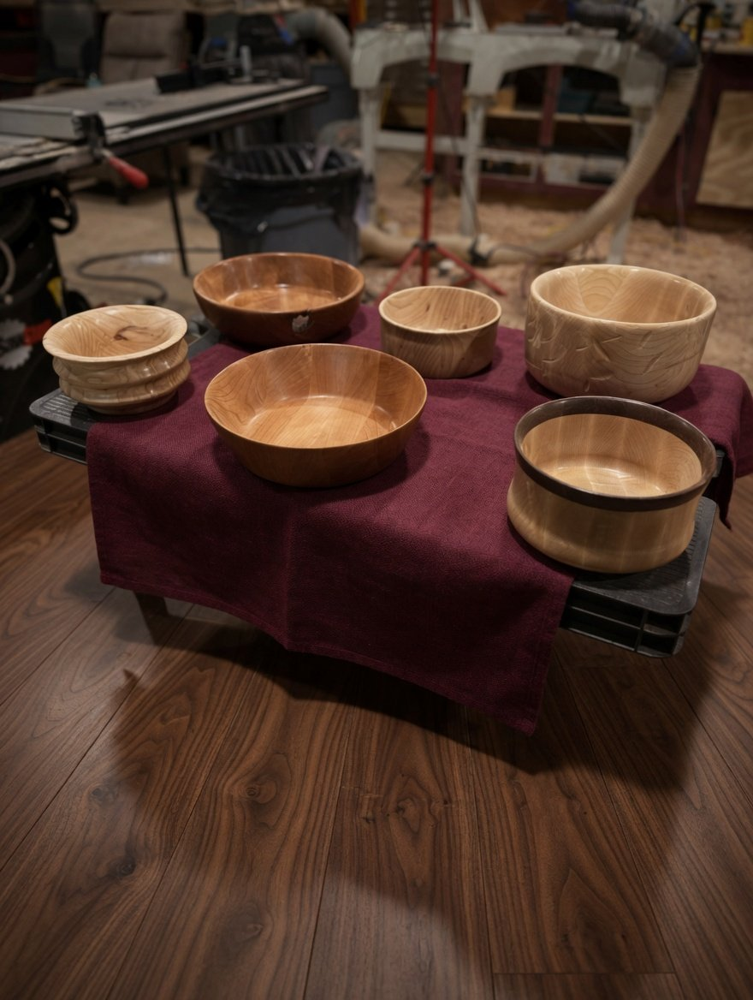
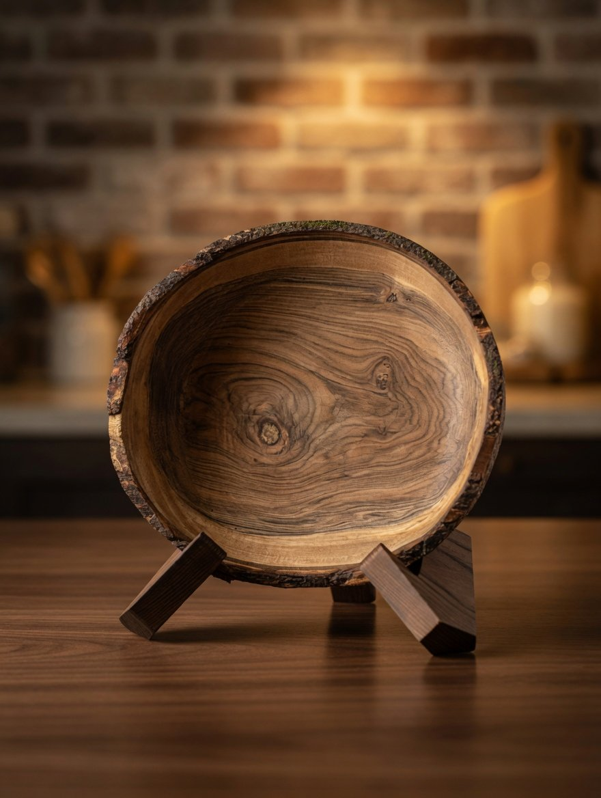

People ask me all the time what kinds of wood I work with. The honest answer is: whatever the county sends me. Knox County, Ohio, sits at the seam between the glaciated till plains to the west and the unglaciated Appalachian foothills to the east, and the Kokosing River cuts a damp green line right through the middle of it. That mix — flat-iron farmland, ridge-and-valley hardwood forest, alluvial river bottoms — produces a handful of trees that show up in my trailer year after year. These are the five I know best.
1. Black walnut (Juglans nigra)
If Knox County has a signature tree, this is it. Black walnut likes deep, well-drained bottom soils, which is exactly what the Kokosing has been laying down for ten thousand years. The biggest ones I've cut came out of the river bottoms east of Gambier and the back forty of farms north of Apple Valley Lake. You can spot them in winter by the bark — deeply furrowed, almost black — and by the way they tower over everything else in a fenceline.
Working walnut is one of the small pleasures of this craft. The heartwood is the color of dark chocolate; the sapwood is creamy pale; the line where they meet is never quite where you'd expect. The wood is oily enough that it cuts cleanly off the gouge and finishes itself if you stop sanding early enough. A walnut bowl with the sapwood edge left on it — what turners call a natural-edge piece — is the closest thing I make to a portrait of the tree.
2. White oak (Quercus alba)
White oak runs the upland ridges. South of Mount Vernon, where the land rises out of the river valley toward the Mohican country, the hilltops are full of them. A mature white oak is unmistakable: pale, plated bark, a great rounded crown, and acorns the squirrels start raiding in August.
For furniture, there is no better Ohio wood. White oak's pores are blocked with little structures called tyloses, which is why it has been used for whiskey barrels and ship hulls for four hundred years — it doesn't leak, and it doesn't rot. The outdoor kitchen stations I build are almost entirely white oak for that reason; they sit on a back patio through ten Ohio winters and they don't care. The grain runs in long, calm rays, and when it's hand-planed instead of sanded, it catches light along those rays in a way that's hard to describe and impossible to fake.
3. Black cherry (Prunus serotina)
Cherry is the fencerow tree. Knox County is full of old field edges where a farmer let one come up sixty years ago because the cattle liked the shade, and now it's three feet across and dropping limbs in every storm. Most of the cherry I work with arrives that way — a phone call after a thunderstorm, a chainsaw on a Saturday, a trailer load home.
Fresh-cut cherry is a pale pink, almost embarrassing in its newness. Give it five years in a finished piece and it darkens to a deep amber-red that no stain on earth can reproduce. People sometimes ask me to skip the “ageing-in” and finish a piece to that final color from the start; I always say no. Half the point of a cherry bowl is watching it become itself, slowly, on your kitchen counter, over the years you own it.

4. Sugar maple (Acer saccharum)
Sugar maple is the cold-loving sibling. It does best on the north-facing slopes and the shaded ravines, where the summer sun doesn't bake the soil dry. The biggest one I ever turned a bowl from grew on a hillside above Howard, in a stand of maples that had been tapped for syrup since the 1930s. The owner finally had to take it down because a microburst broke the top off in 2024. He kept the trunk for me.
Maple is hard, dense, and pale — almost porcelain when it's finished smooth. Most of the time it gives you a quiet, even grain. But every now and then a maple log will surprise you with figure: curly maple, where the grain undulates in tight waves; or birdseye, where tiny knots in the wood look like a hundred small eyes scattered across the board. You can't predict it, and you can't make it on purpose. You just open the log and hope.
5. American sycamore (Platanus occidentalis)
The sycamore is the last one I'll name, and it might be my favorite to talk about. Sycamores grow in the flood plains, right on the Kokosing's edge — you can see them in winter from a mile away because their upper bark is bone-white against the gray of every other tree. They are the largest deciduous trees east of the Rockies. The biggest ones in the county are old enough to have been here when Mount Vernon was a few cabins and a post road.
Sycamore wood is not what most people picture. When it's quarter-sawn — that is, cut so the saw passes through the radial face of the log — the medullary rays in the wood flash out in pale, fish-scale patterns. Turners call this lacewood. I don't get sycamore often, because it doesn't dry easily and most sawyers don't want to bother with it. But when one comes down within driving distance, I drive.
What the county teaches
You could make a list of woods like this for any county in Ohio, or any county in the eastern United States. The five trees would differ by latitude and watershed and soil. But the lesson is the same: a tree is the slow accumulation of one specific place — this hillside, this rainfall, this neighbor's pasture — and when you turn it into a bowl, you carry the place with it.
That is why I won't buy lumber from a yard. A board from a kiln in a state I've never set foot in cannot tell me anything. A log from a downed oak on a county road I've driven my whole life — that I can work with. The wood remembers. The maker's job is to keep the memory intact.
If you've got a tree on your property in Knox County or anywhere within a day's drive, and it's coming down or already has — reach out. We'll figure out what it wants to be.